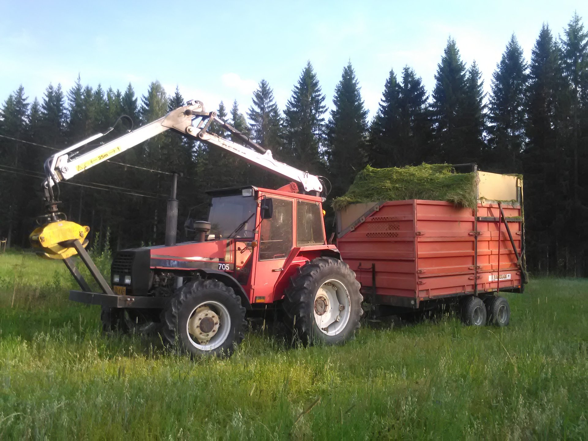
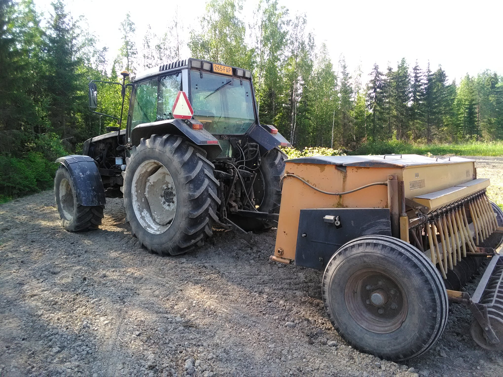
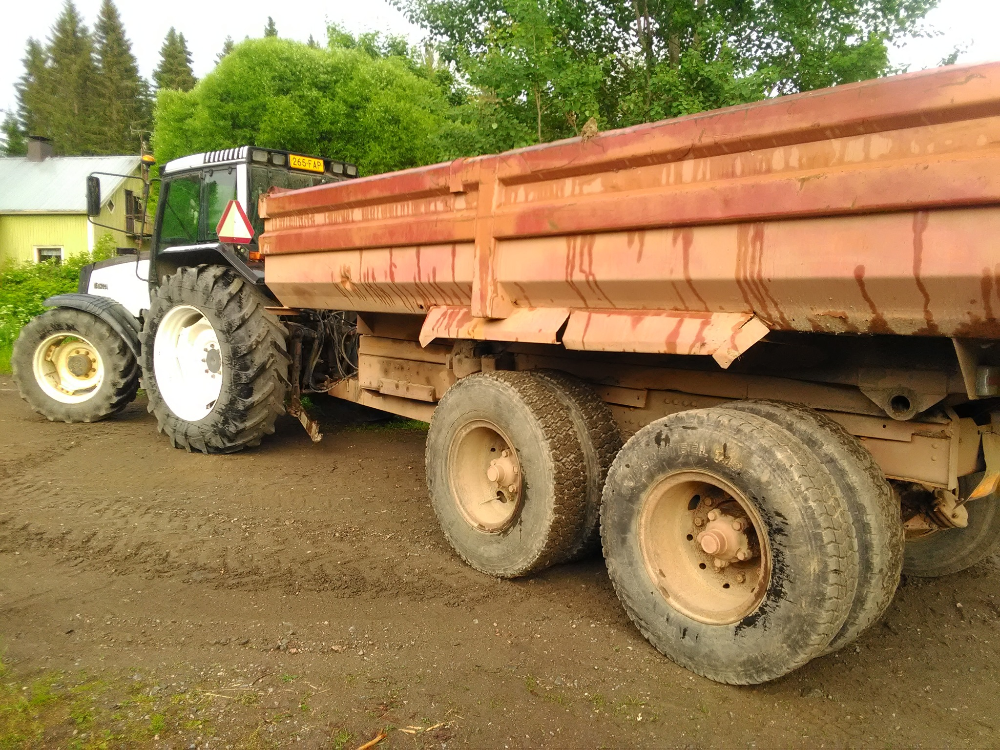

Maatalous tilallamme
Tilallamme harjoitamme myös maataloutta pienessä määrin. Peltoa tilalta löytyy vajaa 30 hehtaaria. Pelloillamme kasvaa pääosin heinää ja viljaa.
Pelloille ei käytetä lainkaan keinolannoitteita, vaan yhteistyökumppaniltamme Kuoppaharjun emolehmätilalta saamme kuivalantaa peltojemme lannoitteeksi. Kasvinsuojeluaineita käytämme pelloillamme hyvin harvoin. Tilaamme ei kuitenkaan ole luokiteltu luomutilaksi. Pelloiltamme saatava rehu kuljetetaan vastavuoroisesti Kuoppaharjun emolehmätilalle.


